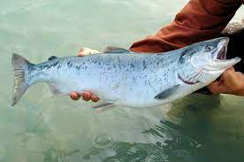

Habitad

Se localiza en la zona Norte del Océano Glacial y en las costas americanas y asiáticas del Pacífico. En Europa su cría en cautividad se viene realizando desde hace ya muchos años. Su carne es la más apreciada, tras la del salmón real.
Caracteristicas
Su cuerpo es alargado y está cubierto de pequeñas escamas redondeadas.
- Su cabeza es pequeña y sus mandíbulas son grandes, llegando hasta el extremo del ojo, y poseen unos dientes fuertes
- La mandíbula inferior sobresale y se engarfia hacia arribaS
- Estos peces habitan casi todos los océanos del mundo
- El género salmo comprendería los animales que viven en el Atlántico y los del Viejo Mundo
menú